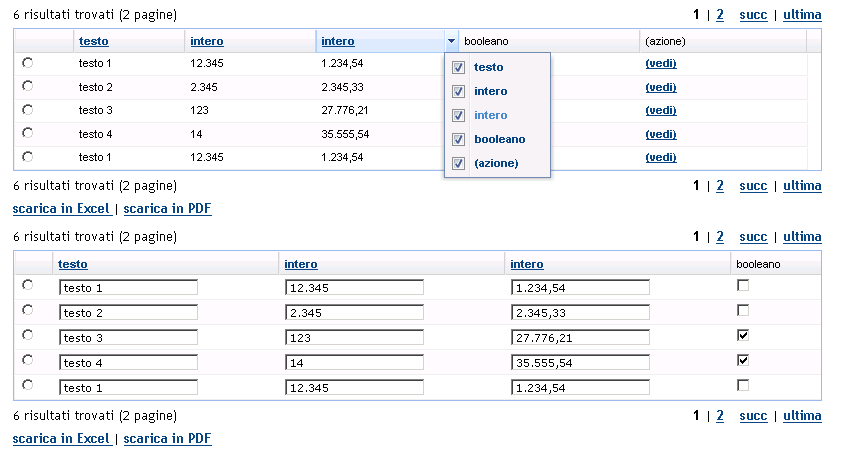

UI Widgets - scheda del widget [ Table]
Table]
In questa scheda è descritto il widget Table, in termini di:
- riferimento alla documentazione di dettaglio dell'elemento del metamodello utilizzabile durante la modellazione
- uno o più snapshot che rappresentano graficamente il widget
- una descrizione del widget che ne descrive l'utilizzo e le possibili varianti
- elenco degli eventi gestibili (implicitamente o esplicitamente) relativamente al widget
Identificativo e riferimenti di dettaglio
La documentazione metamodeldoc di dettaglio del widget Table è disponibile
qui.
Descrizione
E' il classico widget di visualizzazione/editing di dati in formato tabellare.
La Table può essere utilizzata all'interno di:
- WidgetsPanel, con layout Verticale, Orizzontale, Griglia; N.B: deve
essere l'unico widget all'interno del pannello
Prevede tre modalità di funzionamento, una standard/visualizzazione,
una standard/editing ed una ricca.
modalità standard/visualizzazione
Il funzionamento di base della Table prevede:
- la possibilità di visualizzare le informazioni contenute in una
collezione di record, con formattazioen dell'informazione coerente con il tipo di dato
di ciascuna colonna
- la possibilità (opzionale) di effettuare l'ordinamento delle righe in base ai valori
contenuti in una colonna
- la possibilità (opzionale) di paginare i risultati (con dimensione della pagina impostabile)
- la possibilità (opzionale) di effettuare l'export dei dati della tabella in formato excel o pdf
- la possibilità (opzionale) di selezione singola o multipla delle righe della Tabella, allo scopo
di eseguire logiche applicative sulle righe selezionate (l'esecuzione della logica deve essere comandata in un momento
successivo alla selezione da un Button posto nella stessa schermata)
- la possibilità di effettuare, al momento del submit della form,
la validazione dell'input immesso a seconda del tipo di dato associato
al campo e di alcuni ulteriori specifiche
- la possibilità di essere disabilitata a comando
- la possibilità di essere resa invisibile a comando
- la possibilità di essere disabilitata/invisibile a fronte di regole associate al profilo dell'utente
collegato
modalità standard/editing
Ripsetto alla modalità standard/visualizzazione la modalità standard/editing
prevede alcune possibilità aggiuntive:
- editing in place delle celle di una colonna:
- il widget di editing della cella dipende dal tipo di dato associato alla colonna:
- Calendar in caso di tipo DATA
- CheckBox in caso di tipo BOOLEAN
- TextField in tutti gli altri casi
- è possibile selezionare il valore di una cella da una lista di valori (in questo caso il widget utilizzato
per l'immissione è la ComboBox); l'elenco dei valori selezionabili può essere comune a tutte le
righe oppure specifico per ciascuna riga
- è possibile, nell'ambito di una colonna dichiarata editabile, decidere a runtime l'editabilità
della singola cella (nel qual caso il widget corrispondente apparirà disabilitato)
modalità ricca
La modalità ricca prevede di default i seguenti comportamenti aggiuntivi:
- tooltip al passaggio del cursore sull'intestazione delle colonne
- refresh della sola area della tabella in caso di esecuzione delle funzioni di ordinamento e paginazione
- possibilità di ridimensionare/cambiare l'ordine/nascondere le colonne della tabella interattivamente
Immagini esemplificative

fig.1 - esempio di rendering grafico del widget
Eventi associati al widget
evento "event-clicked"
In una tabella è possibile rendere "attive" le celle di alcune
colonne (purchè esse non siano editabili). L'evento "clicked" è proprio il "click" dell'utente
su tali celle.
E'possibile, a fronte ddi questo evento, scatenare una logica applicativa e modificare di
conseguenza la schermata visualizzata. Esistono due modalità di esecuzione della logica
associata: standard e ricca.
modalità standard
Al click di una cella viene eseguita la logica applicativa associata
e, al termine dell'esecuzione viene ricaricata l'intera schermata
oppure il flusso passa ad una schermata differente.
modalità ricca
Alla click di una cella viene eseguita la logica applicativa associata. Durante
l'esecuzione viene sospesa l'interazione utente e viene visualizzato un
indicatore di "operazione in corso".
Al termine dell'esecuzione i possibili effetti sono:
- il refresh dell'intera schermata corrente, con mantenimento della
posizione delle eventuali scrollbar
- il refresh di una porzione specifica di schermata
- il passaggio del flusso ad una schermata differente